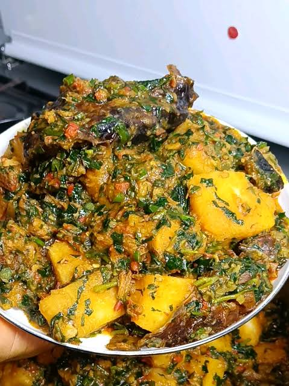

Porridge
Home

About Yam Porridge
Yam Porridge affectionately known as Asaro is pure Nigerian comfort food at its finest! Soft, sweet tubers of white yam are simmered in a savory pepper sauce until they melt into a rich, mouth watering blend that warms you from the inside out.
Whether you like it mashed smooth or filled with tender, chunky yam bites, this dish is an affordable, soul nourishing favorite that anyone can master. It proves you don't need a lavish spread to enjoy a world class meal just fresh ingredients, rich palm oil, and a little bit of love!
Ingredients
- Punu or white yam (peeled and diced into cubes)
- Palm oil
- Blended tomatoes, red bell peppers, and scotch bonnets
- Chopped onions
- Smoked fish or dry fish (flaked)
- Ground crayfish
- Seasoning cubes and salt (to taste)
- Chopped spinach or ugwu leaves (optional)
- Water
Steps to Prepare
- Place your diced yam cubes into a pot, add water until it just barely covers the yam, and set it on medium heat.
- Add your chopped onions, blended pepper mix, smoked fish, ground crayfish, seasoning cubes, and salt directly into the pot.
- Pour in your palm oil, cover the pot, and let everything cook together on medium heat for about 15 to 20 minutes until the yam becomes very soft.
- Using a wooden spoon, gently mash some of the yam cubes against the side of the pot to thicken the sauce while leaving some chunky pieces for texture.
- Stir in your chopped leafy greens, cover, and let it simmer on low heat for another 3 to 5 minutes.
- Turn off the heat, give it a final gentle stir, and serve your hot, creamy Asaro!
There are also other